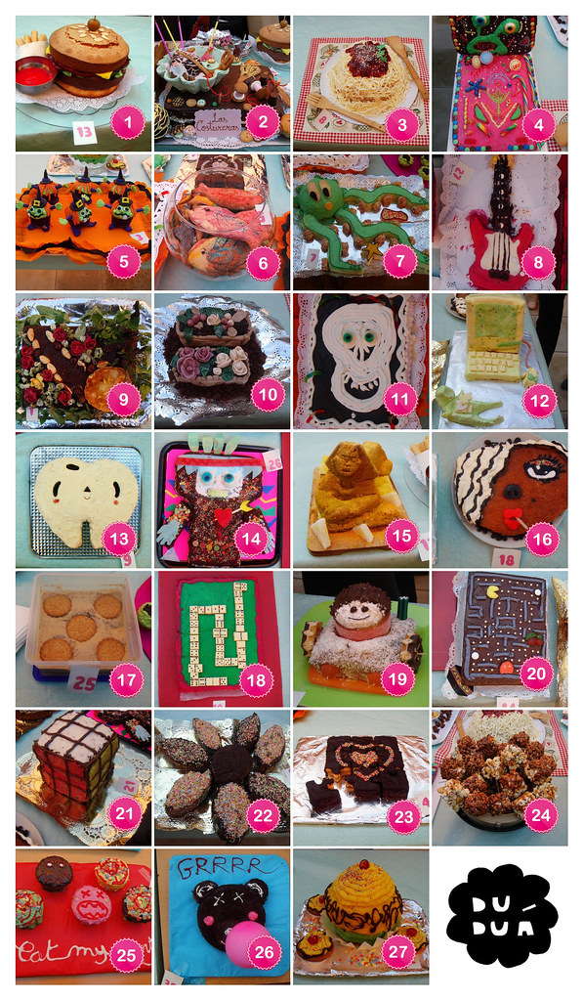
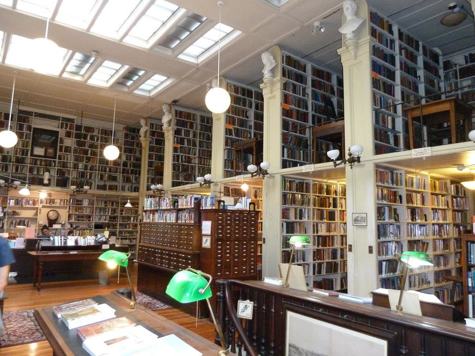

Dictionary
Rank
- Definition:
-
To arrange something in a given order.
-
Disponer algo en un orden.
- Example:
-
When doing research, rank information to know which matters most.
-
Cuando investigues, clasifica la información para saber cuál importa más.
- Spanish word:
-
Clasificar
- Audio:
Source
- Definition:
-
Thing or person that provides information.
-
Algo o alguien que aporta información.
- Example:
-
A realiable source of information is essential in any research.
-
Una fuente de información fiable es esencial en cada investigación.
- Spanish word:
-
Fuente
- Audio:

 In teams, design an outline for a radio show.
In teams, design an outline for a radio show. Remember to cast each role:
Remember to cast each role: - Radio host.
- Radio host. - Reporters.
- Reporters. - Panellist.
- Panellist.